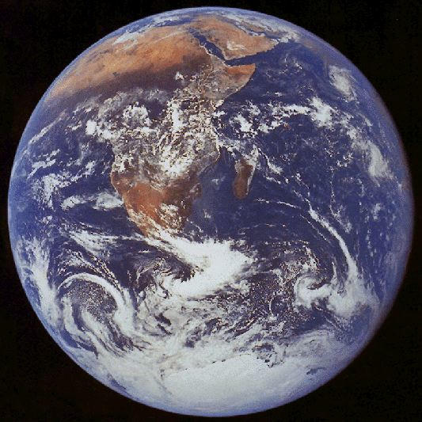
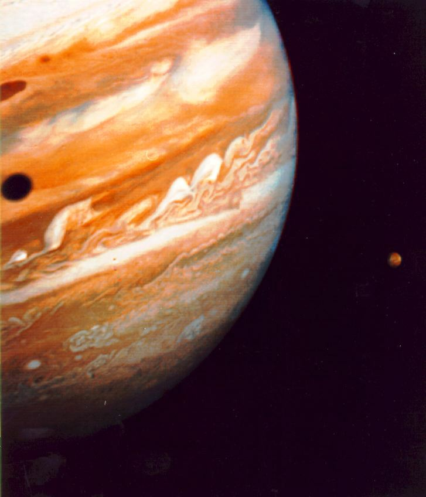
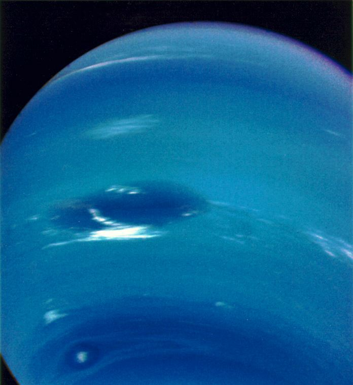
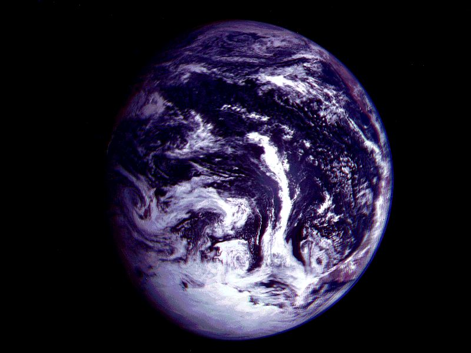
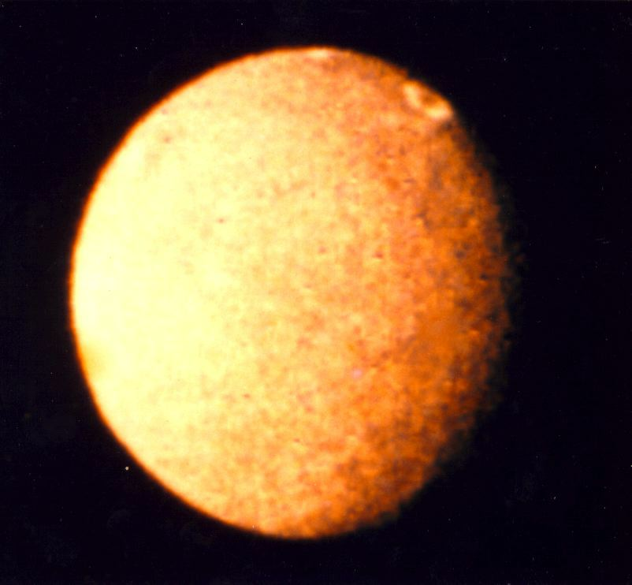
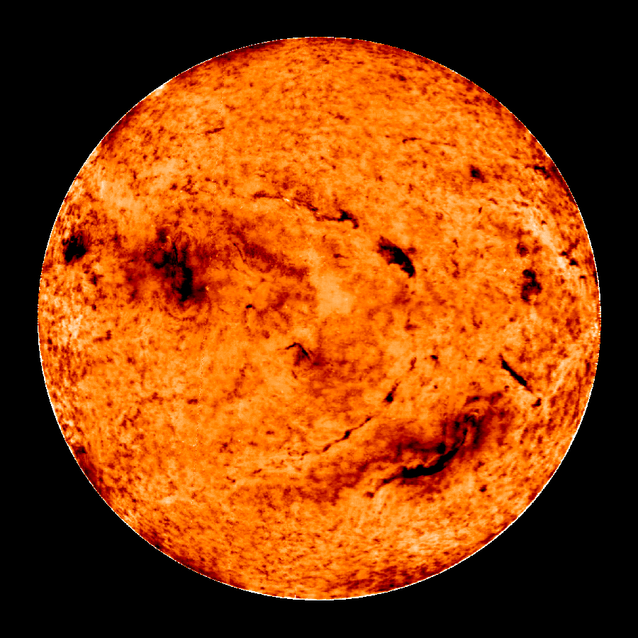
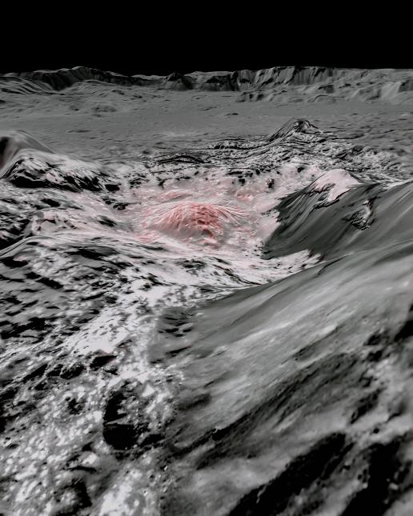

NASA Photos
Hover over each photo tab to see the photos.
-
Image 1
Apollo 17 Earth image courtesy of NASA
-
Image 2
Jupiter image courtesy of NASA
-
Image 3
Neptune image courtesy of NASA
-
Image 4
 Venus Globe image courtesy of NASA
Venus Globe image courtesy of NASA -
Image 5
Galileo Mid-Pacific Ocean view courtesy of NASA
-
Image 6
Umbriel, the darkest of Uranus' five moons courtesy of NASA
-
Image 7
A false color image of the Sun in He courtesy of NASA
-
Image 8
Ceres' Occator Crater courtesy of NASA